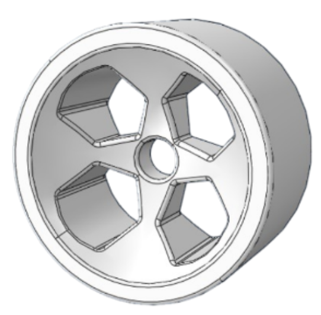
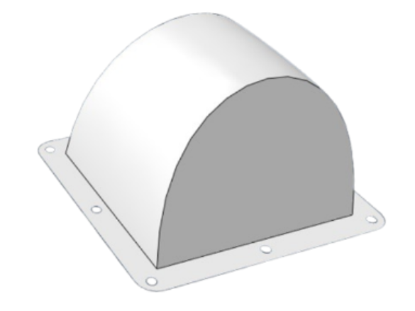

Structural Analysys and Design of a Rover


Context
Project carried out in a team of three as part of the CNLS module (Nonlinear Structural Analysis), aiming to design and optimize parts of a rover, namely the wheels and the protective dome of the electronic system, in compliance with a given set of specifications. The work combined CAD design, nonlinear finite element simulation, and material selection to identify the best-performing solution.
Skills Acquired
· Component design and optimization against a technical specification
· Nonlinear finite element analysis (FEA)
· Material selection based on performance criteria
· 3D CAD modeling
· Teamwork within a 3-person team
Software Used
· 3DEXPERIENCE (CAD design)
· Abaqus (nonlinear FE simulation)
· Granta EduPack (material selection)